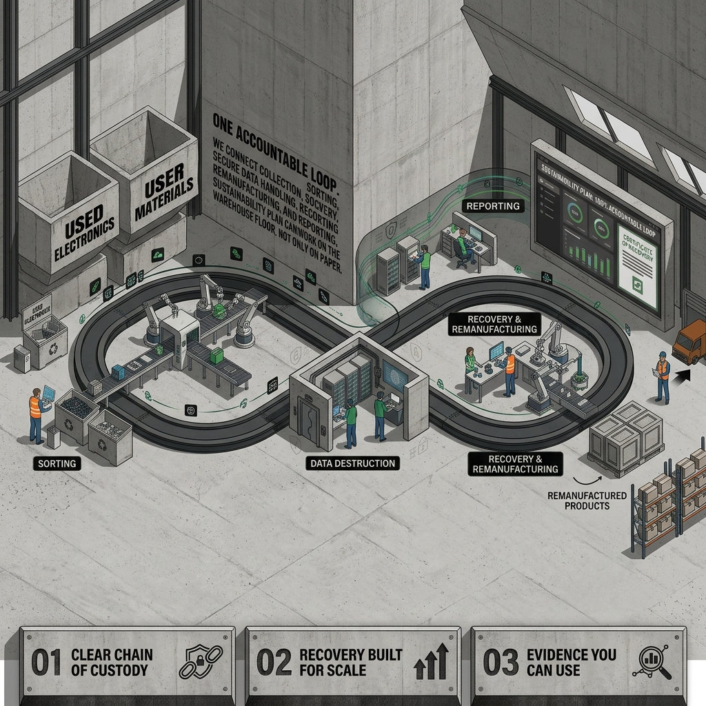
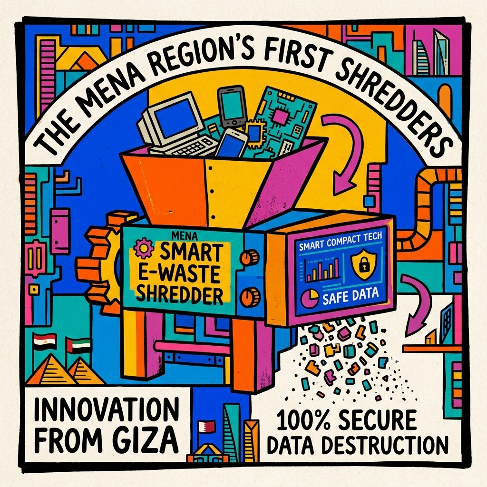

Trace the flow
See what is leaving your operation, what it contains, and which recovery route creates the most value.
See our servicesDR.WEEE turns retired equipment into secure recovery, useful materials, and better decisions for the next cycle.
Retired technology is a resource with a route still to choose.
Circularity becomes useful when it is easy to operate, safe to audit, and built around the equipment already in your business.
See what is leaving your operation, what it contains, and which recovery route creates the most value.
See our servicesProtect data, people, and compliance with collection plans and documentation designed for real operations.
Talk to an expertRecovery, remanufacturing, and reuse keep useful components working and reduce demand for new resources.
Measure the impact
FIELD NOTE / 02We connect collection, sorting, secure data handling, recovery, remanufacturing, and reporting so your sustainability plan can work on the warehouse floor, not only on paper.
From individual office devices to industrial electronic shredding, our integrated operations keep materials moving forward.
Serialized decommissioning, NIST 800-88 certified data wiping, and secure recovery for enterprise hardware.
Closed-loop remanufacturing of OEM toner cartridges, delivering 50% cost reductions with OEM-matching yield.
Locally engineered smart e-waste shredders and granulators custom-built for industrial recycling scale.
Refining precious metals, copper, and engineering polymers back into verified industrial manufacturing supplies.
DR.WEEE manufactures Egypt and MENA's first smart industrial shredders and granulators — eliminating import dependency, establishing sovereign manufacturing capability, and scaling operations across 11+ regional markets.

We partner with leading enterprises and government institutions where chain-of-custody, compliance, and verified destruction cannot fail.
Start with the equipment, the constraint, or the target. We will help you find a route that is practical, secure, and worth measuring.
Ask the teamWe review your equipment, volumes, locations, and priorities, then outline a collection and recovery route that fits your operation.
Yes. We plan collections for offices, warehouses, facilities, and distributed sites with timing and handling shaped around your team.
Data-aware handling is built into the route. We agree the required controls and document each accountable handoff.
We work across IT equipment, electronic devices, components, and printing hardware. Share what you have and we will confirm the best route.
Yes. Every recovery cycle includes an official DR.WEEE Certificate of Safe Recycling and a verified ESG report detailing materials saved, carbon offsets, and regulatory compliance proof.
Typically, scheduled corporate collections in Cairo and major industrial zones take 48 to 72 business hours from confirmation. Dedicated timelines are arranged for multi-site decommission projects.
Yes. Recoverable devices and high-yield components can be appraised for cash returns or credited into our circular store program for remanufactured office hardware and toner supplies.
We adhere strictly to international NIST 800-88 and DoD sanitization standards, providing serialised data-wiping logs and physical destruction certificates for storage media.
Bring us the equipment, the constraint, or the ambition. We will turn it into a practical plan for what happens next.
Start the conversation